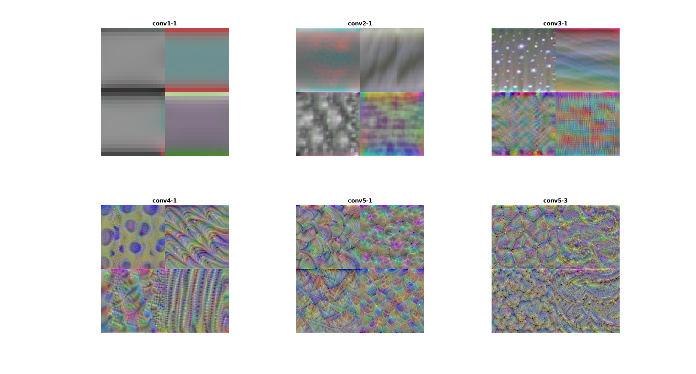
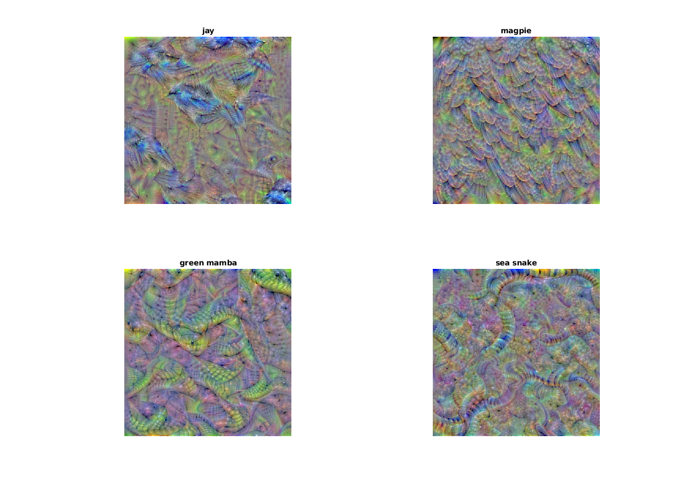

Contents
Compete with keras over vgg16 visualisation
Here I am following this blog which explains how CNN sees the world. blog which offers visualisation procedures for Keras. While I am greatful for it to show me the way, I am trying to see if matlab tools are better or easier to use.
Load VGG16
Matlab's vgg16 add-on is the same VGG16 used by blog.keras, I checked every single weight, they matched. I also imported keras' network to matlab and got the same classification as vgg16. You may want to try prove me wrong, but I am convinced that Matlab's net is what everybody uses with Python.
net=vgg16;
Visualise increasingly complex layers
Here I follow the blog's outline, showing examples of the same layers, if not the same nodes. First I list which layers I want to visualise (convOnes in the code below). Then I set zoom-out steps. For the first, simpler layers, I want to zoom-out a bit, otherwise I get a 3 by 3 pixel image per node. I do that using 'PyramidLevels'. 7 pyramid levels are okay for a 3 by 3 node, but not to large sets of weights. My Ubuntu laptop+GPU crashed when trying such a stunt. So I set the steps between 7 to 3 according to filter size.
convOnes=[2,7,12,19,26,30]; pyramid=[7,6,5,4,3,3]; figure('units','normalized','outerposition',[0 0 1 1]) for layeri=1:length(convOnes) clear convX_1 for filteri=1:4 I = deepDreamImage(net,convOnes(layeri),filteri,'verbose',false,'PyramidLevels',pyramid(layeri)); convX_1(1:size(I,1),1:size(I,2),1:3,filteri)=deprocessImage(I); end subplot(2,3,layeri) montage(convX_1); title(strrep(net.Layers(convOnes(layeri)).Name,'_','-')) end
Visualize class nodes
The blog shows not so birdy magpie and a not so snaky sea snake. Since matlab and python do not start from the same index I accidentally visualised Green Mamba and Jay. Let's look at all four
nodes=[18,19,65,66]; figure('units','normalized','outerposition',[0 0 1 1]) for nodei=1:4; I = deepDreamImage(net,39,19,'PyramidLevels',3,'PyramidScale',2); I = deprocessImage(I); subplot(2,2,nodei) imshow(I) title(net.Layers(41).ClassNames{nodes(nodei)}) end
|============================================| | Pyramid | Iteration | Activation | | Level | | Strength | |============================================| | 1 | 1 | 0.13 | | 1 | 2 | 1.52 | ... | 3 | 9 | 58.08 | | 3 | 10 | 54.07 | |============================================|
So what have we learned?
I do not work for Matlab, but their visualizetion tool is cool and helpful. Matlab is not the best option now for deep-learning for a few reasons, perhaps mainly because it is not free and the options are still limited. However if you want to use the most popular pretrained nets, or the most common net types (such as Faster R-CNN) then Matlab has its advantages - fewer lines of code and easy visualisation. As for how AI sees the world - I think it sees birds and snakes pretty well as we do, with the main difference that for CNN it doesn't matter so much how the beak connects to the feathers (although this toolkit yields well connected bird pieces). However, when nodes have to be sensitive for different kinds of birds and different categories altogether, you should expect distinguishing features to show up, and not necessarily an image of the class architype.

keras-vis toolkit example
other links:
keras-visualize-activations - a tool to visualize filters activation
filter-visualization - an enlightening explanation about the matter
disp('bye bye')
bye bye